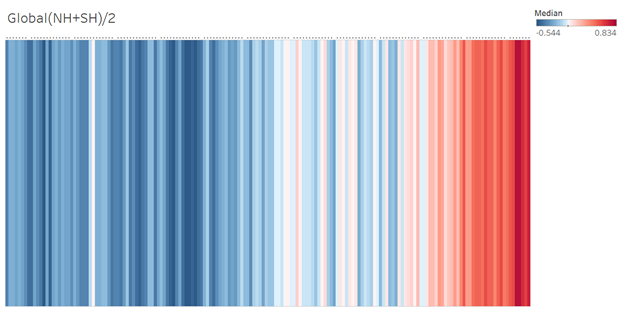
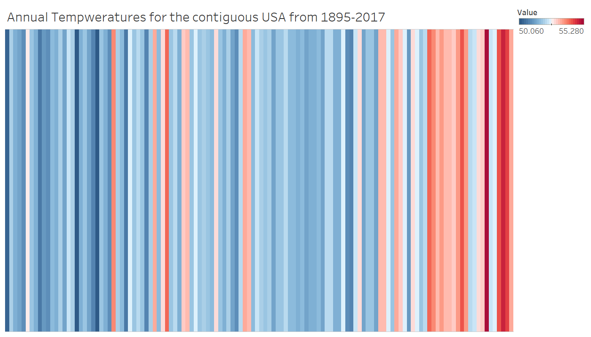

Part 2 Visualization on Warming stipes
1. Annual global temperatures from 1850-2017
Data Used: HadCURT4 Data
Region Selected : Global(NH+SH)/2, Annual time series of 100 ensemblemembers https://www.metoffice.gov.uk/hadobs/hadcrut4/data/current/download.html
Tool Used : Tableau
Tableau Workbook Publication : https://10ay.online.tableau.com/#/site/vidyasvisualizations/workbooks/567765/views

Colour scale represents the change in global temperatures covering 1.35°C
2. Annual temperatures for the contiguous USA from 1895-2017
Data Used:Annual Temperatures of US (Environmental information 2019)
Tool Used: Tableau
Tableau Workbook Publication: https://10ay.online.tableau.com/#/site/vidyasvisualizations/workbooks/567766/views

The colour scale goes from 50.2°F (dark blue) to 55.0°F (dark red)
Aragon, Cecillia. 2017. “How to Evaluate a Visualisation[Video File].” https://www.coursera.org/lecture/data-results/14-evaluating-visualizations-IBuU3.
Azzam T, Kistler S J, Evergreen S. 2013. “Data Visualization and Evaluation.” https://dmlcommons.net/wp-content/uploads /2015/12/data_visualization_evaluation.pdf.
Change, NASA Global Climate. 2019. “Climate Change: How Do We Know?” https://climate.nasa.gov/evidence/?text=Larger.
Environmental information, NOAA National Centers for. 2019. “Climate at a Glance: National Time Series.” https://www.ncdc.noaa.gov/cag/.
HAUSFATHER, ZEKE. 2017. “Analysis: Why Scientists Think 100.” https://www.carbonbrief.org/analysis-why-scientists-think-100-of-global-warming-is-due-to-humans.
Loris, Nicolas. 2009. “Man’s Contribution to Global Warming.” https://www.dailysignal.com/2009/03/27/man%E2%80%99s-contribution-to-global-warming/.
Pearce, Fred. 2007. “Climate Myths: Global Warming Is down to the Sun, Not Humans.” https://www.newscientist.com/article/dn11650-climate-myths-global-warming-is-down-to-the-sun-not-humans/.
Science, Australian Academy of. 2013. “3. Are Human Activities Causing Climate Change?” https://www.science.org.au/learning/general-audience/science-booklets-0/science-climate-change/3-are-human-activities-causing.
Staff, RTCC. 2012. “NASA: Human Activity Cause of Climate Change.” https://www.climatechangenews.com/2012/02/01/nasa-humans-not-sun-changing-earths-temperature/.
References
Environmental information, NOAA National Centers for. 2019. “Climate at a Glance: National Time Series.” https://www.ncdc.noaa.gov/cag/.